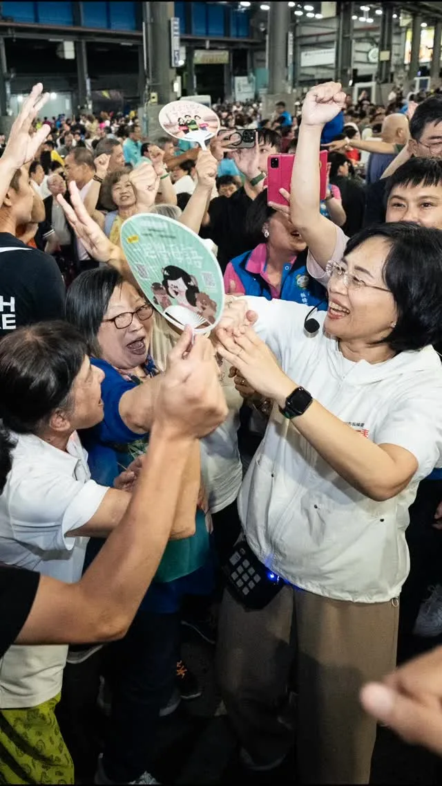
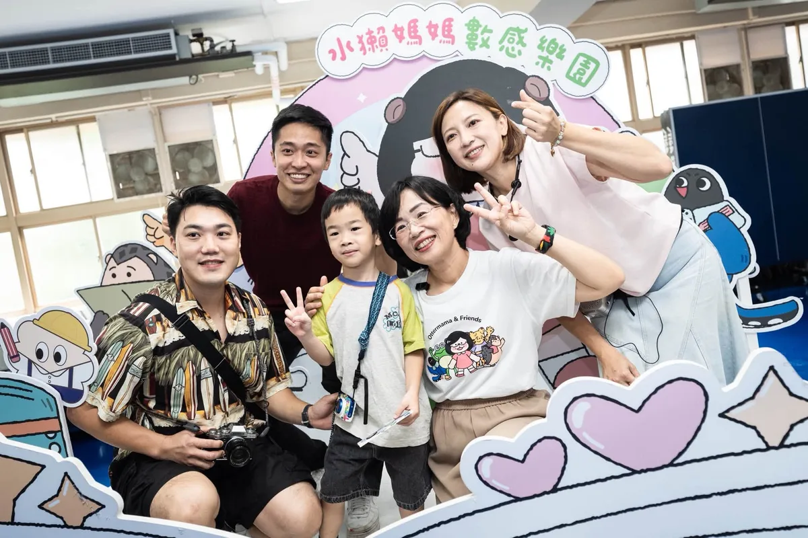
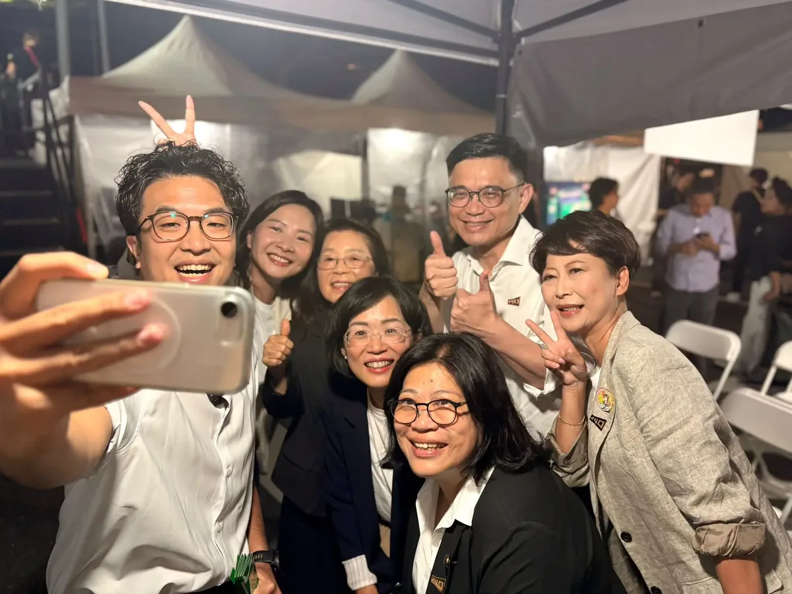

蘇巧慧su.chiaohui
@su.chiaohui:民主路40年，我們一棒接一棒，讓新世代扛起新時代！ 民主進步黨即將邁進40週年，從黨外運動、民主轉型到今天，我們能擁有亞洲第一的民主、用選票決定未來，都是無數個民主前輩用青春與勇氣一步一步走出來的路。 現在，輪到我們新世代扛起責任，繼續向前行，為下一代開闢一條更寬廣、更自由、充滿機會的道路！
Accounts
| 平台 | 帳號 | 已收錄貼文 | 最後更新 |
|---|---|---|---|
| 官網 | https://chiao.tw/ | 44 | 2026-09-20 00:00 |
| https://www.facebook.com/chiaohui.su | 124 | 2026-09-20 10:00 | |
| https://www.instagram.com/su.chiaohui/ | 164 | 2026-09-21 17:00 | |
| YouTube | https://www.youtube.com/channel/UCBybqVtDU2YgADc8tBqUz5A | 88 | 2026-09-22 08:56 |
| LINE 官方帳號 | http://line.me/ti/p/%40suchiaohui | 0 | — |
| Threads | https://www.threads.com/@su.chiaohui | 189 | 2026-09-22 09:17 |
| Podcast | https://open.spotify.com/show/06fXdjNXspAe1QLML8EsAv | 8 | 2026-09-17 15:00 |
Timeline
顯示 617 / 617 則
@su.chiaohui:民主路40年，我們一棒接一棒，讓新世代扛起新時代！ 民主進步黨即將邁進40週年，從黨外運動、民主轉型到今天，我們能擁有亞洲第一的民主、用選票決定未來，都是無數個民主前輩用青春與勇氣一步一步走出來的路。 現在，輪到我們新世代扛起責任，繼續向前行，為下一代開闢一條更寬廣、更自由、充滿機會的道路！

非常感謝數百位 #澎湖鄉親、#機車業好朋友 站出來，一連為我成立兩個後援會。 新北和澎湖都有豐厚的自然資源與海洋文化，未來我不但會透過 #新皇冠海岸計畫，擦亮新北145公里海岸線品牌，更要和未來的 @wu_shuchin #吳淑瑾 澎湖縣長，推動更多跨域合作！ 🌊舉辦「海洋文化節」、雙城聯名遊程，讓新北、澎湖觀光共好！ 🌊擴大舉辦「澎湖農漁特產展售會」，引進澎湖好滋味，穩定產銷通路。 🌊推動「新北澎湖遊學團」，傳承在地特色與文化。 🌊深化技職教育、促進技術交流，加速漁業智慧轉型。 針對機車產業發展，我也向大家報告未來努力的方向： 🛵提高「乙級技術士證照獎金」至6000元，補助車行降噪、排風、防汙設備，實現車行、社區共榮共好。 🛵強化道路安全、支持「合法改裝、客觀驗車」，民眾騎車更安心、更便利。 🛵舉辦「新北機車展」，結合商圈創造規模經濟。 倒數68天，做伙打拚、做伙好！新北就要迎接新時代✨

@su.chiaohui:感謝昨晚新北市板橋區雲林同鄉會的熱情安排，還有數千雲林鄉親給我的支持和鼓勵！ 我們會繼續努力，帶領新北隊繼續衝，迎接新北新時代！

#水獺媽媽數感樂園 大成功！玩出數學的無限可能✨ 這次水獺媽媽樂園特別和 @numeracylabtw 合作，把數學變成好玩的互動機台和趣味關卡！我也和小水獺們挑戰超神奇的剪紙魔術，讓一張原本只能站三個人的紙，經過巧妙裁剪，竟然變成超大紙圈，一口氣裝進30個小朋友，大家玩得又驚又喜❤️ 這次最有成就感的環節，就是我們用大型的「新店地圖」，讓大家一起找找自己的家在哪裡，再放上親手用紙盒做成的小房子，用不同角度重新認識熟悉的生活圈。看著地圖上的小房子越蓋越多，整個新店都變成大家一起探索的大樂園！ 很開心水獺媽媽樂園可以和不同領域結合，把知識變成孩子玩得開心、學得投入的精彩體驗。我會把更多好玩又有趣的活動帶到新北各地，陪伴親子一起從玩中學、學中玩，帶給孩子們難忘的成長回憶！

學客語也可以這麼有趣！一起「玩中學、學中玩」 我和 #鄭麗君 副院長、#古秀妃 主委一起來到 #大FUN凱道，走進客委會主辦的「客庄市場」，與孩子們一起學客語、認識客家食材。透過生活中吃的文化開始學習，讓孩子發現原來認識客家文化可以這麼好玩！ 我們也到各攤位和大家一起逛二手市集、玩泡泡、體驗地板滾球，現場還有環境永續、兒本交通等豐富的親子活動，讓孩子從遊戲中認識不同議題。 我一直認為，文化傳承最好的方式，就是讓孩子從生活中自然接觸、願意開口，慢慢認識自己的語言與文化，才能一代一代傳承下去。 所以未來在新北，我會持續推廣客語教育、挹注更多資源支持客家文史團體及社團，更要打造「新北AI客語學習平台」，讓客語更貼近生活，讓更多孩子願意學、喜歡說，希望每一位客家子女都能多認識自己的文化、以自己的文化為榮。

Connecting Resources! New Taipei and Chiayi: Better Together, Winning Together!
很高興在創黨40週年音樂會和所有好戰友再次聚在一起！我們一定會一起贏！ #傳承40民主共鳴

嘉義人挺自己人！非常感謝 @onlychiayi #翁章梁 縣長特別到新北，和破千名在新北生活、打拚的嘉義鄉親一起為我加油！ 未來，我不但會用新觀念，做好城市的代言人，我也和 @chiayionefish #蔡易餘 縣長候選人一起提出兩座城市的 #AI產業、#農業人才 相互交流串連，要讓新北、嘉義一起升級！ 做伙拚、做伙好！新北、嘉義就要迎接新時代！

【Otter Mama’s Little Chats】Bobo is Feeling Cranky Today | Emotional Education | Understanding and...
民生資訊 嘉義人挺自己人！感謝翁章梁縣長來相挺 兩座城市相互交流串連，新北、嘉義一起升級！ 2026.09.19

DPP 40th Anniversary Concert Speech: "40 Years of Legacy, A Democratic Resonance" – Let the New G...

@su.chiaohui:台灣第一人！板橋子弟劉人仁勇奪世界音樂大賽「金指揮棒獎」！ 今天我和 @hunglutw 張宏陸委員、林森照里長當面恭喜人仁，在「管樂界奧運」世界音樂大賽中奪下管樂指揮最高榮譽「金指揮棒獎」！ 人仁是台灣第一位獲得此獎的指揮家，也是接受德國管樂指揮教育後奪獎的第一人，驚豔了德國樂壇，真的非常厲害！ 人仁是我們新北的孩子，今天我們也深入討論，未來如何在新北培育、留住更多優秀的藝文人才，並讓藝術文化真正走入市民的日常生活。 未來擔任市長，我會完善藝文教育、升級展演環境，為人才搭建更寬廣的舞台，讓更多像人仁一樣有才華的人，都能在新北表現精彩、自信發光！
感謝昨晚 #新北市板橋區雲林同鄉會 的熱情安排，還有數千雲林鄉親給我的支持和鼓勵！ 我們會繼續努力，帶領新北隊繼續衝，迎接新北新時代！

@su.chiaohui:學客語也可以這麼有趣！一起「玩中學、學中玩」 我和鄭麗君副院長、古秀妃主委一起來到「大FUN凱道」，走進客委會主辦的「客庄市場」，與孩子們一起學客語、認識客家食材。透過生活中吃的文化開始學習，讓孩子發現原來認識客家文化可以這麼好玩！ 我們也到各攤位和大家一起逛二手市集、玩泡泡、體驗地板滾球，現場還有環境永續、兒本交通等豐富的親子活動，讓孩子從遊戲中認識不同議題。

學校教育 水獺媽媽數感樂園大成功！玩出數學的無限可能 這次水獺媽媽樂園特別和數感實驗室合作，把數學變成好玩的互動機台和趣味關卡！我也和小水獺們挑戰超神奇的剪紙魔術～ 2026.09.20
很高興在創黨40週年音樂會和所有好戰友再次聚在一起！我們一定會一起贏！ #傳承40民主共鳴
@su.chiaohui:嘉義人挺自己人！非常感謝 @onlychiayi 翁章梁縣長特別到新北，和破千名在新北生活、打拚的嘉義鄉親一起為我加油！ 未來，我不但會用新觀念，做好城市的代言人，我也和 @chiayionefish 蔡易餘縣長候選人一起提出兩座城市的AI產業、農業人才相互交流串連，要讓新北、嘉義一起升級！ 做伙拚、做伙好！新北、嘉義就要迎接新時代！

@su.chiaohui:聯合競總從永和出發！感謝 #許昭興 議員今天成立和我的永和聯合競選總部，接下來我也會陸續在新北29區成立聯合競選總部。 最後70天，新北隊一起衝，迎接新北新時代！
地方建設 聯合競總從永和出發！Ft. 許昭興議員 我們會讓永和更好，讓永和人更喜歡這裡的生活，也讓更多人看見永和的文化底蘊。 2026.09.19

@su.chiaohui:開箱新北第三彈——鑽石山城！ 大家都知道新北有得天獨厚的山海美景，而我今天再次請到重量級來賓宣傳我們這次的主題「鑽石山城」，這位VIP就是樂樂⋯⋯的主人—— @tsai_ingwen 小英總統！ 這一次的尋寶紀念品是與漫畫家季雅 @kiyascomic以及插畫家Asta Wu @asta_astawu合作！ 季雅的作品《異人茶跡》帶我們透過茶葉的歷史故事，看見百年以前臺灣茶走向世界的過程；而Asta Wu 除了有和山林製造以及林業署合作的插畫設計，也有自己的「臺灣特色茶」系列插畫。這裡面，都與我們新北山城的製茶文化息息相關，非常推薦大家除了參與這次的藏寶計劃，也看看兩位創作者的精彩作品！ 希望大家一起透過尋寶，更認識新北閃亮亮的「鑽石山城」！

@su.chiaohui:新北和澎湖都有豐厚的自然資源與海洋文化，未來我不但會透過「新皇冠海岸計畫」，擦亮新北145公里海岸線品牌，更要和未來的 @wu_shuchin 吳淑瑾縣長，推動在觀光、產業、教育與文化等更多跨域合作！ 針對機車產業發展，我也向大家報告未來努力的方向，不但要實現車行、社區共榮共好，也要改善道路安全，讓民眾騎車更安心、更便利。 倒數68天，做伙打拚、做伙好！新北就要迎接新時代✨

台灣第一人！板橋子弟 #劉人仁 勇奪世界音樂大賽 #金指揮棒獎！ 今天我和 @hunglutw 張宏陸委員、#林森照 里長當面恭喜人仁，在「管樂界奧運」 #世界音樂大賽 中奪下管樂指揮最高榮譽「金指揮棒獎」！ 人仁是台灣第一位獲得此獎的指揮家，也是接受德國管樂指揮教育後奪獎的第一人，驚豔了德國樂壇，真的非常厲害！ 人仁是我們新北的孩子，今天我們也深入討論，未來如何在新北培育、留住更多優秀的藝文人才，並讓藝術文化真正走入市民的日常生活。 未來擔任市長，我會完善藝文教育、升級展演環境，為人才搭建更寬廣的舞台，讓更多像人仁一樣有才華的人，都能在新北表現精彩、自信發光！ 台灣第一人！板橋子弟 #劉人仁 勇奪世界音樂大賽 #金指揮棒獎！ 今天我和 @hunglutw 張宏陸委員、#林森照 里長當面恭喜人仁，在「管樂界奧運」 #世界音樂大賽 中奪下管樂指揮最高榮譽「金指揮棒獎」！ 人仁是台灣第一位獲得此獎的指揮家，也是接受德國管樂指揮教育後奪獎的第一人，驚豔了德國樂壇，真的非常厲害！ 人仁是我們新北的孩子，今天我們也深入討論，未來如何在新北培育、留住更多優秀的藝文人才，並讓藝術文化真正走入市民的日常生活。 未來擔任市長，我會完善藝文教育、升級展演環境，為人才搭建更寬廣的舞台，讓更多像人仁一樣有才華的人，都能在新北表現精彩、自信發光！ 圖／劉人仁提供 台灣第一人！板橋子弟 #劉人仁 勇奪世界音樂大賽 #金指揮棒獎！ 今天我和 @hunglutw 張宏陸委員、#林森照 里長當面恭喜人仁，在「管樂界奧運」 #世界音樂大賽 中奪下管樂指揮最高榮譽「金指揮棒獎」！ 人仁是台灣第一位獲得此獎的指揮家，也是接受德國管樂指揮教育後奪獎的第一人，驚豔了德國樂壇，真的非常厲害！ 人仁是我們新北的孩子，今天我們也深入討論，未來如何在新北培育、留住更多優秀的藝文人才，並讓藝術文化真正走入市民的日常生活。 未來擔任市長，我會完善藝文教育、升級展演環境，為人才搭建更寬廣的舞台，讓更多像人仁一樣有才華的人，都能在新北表現精彩、自信發光！ 圖／劉人仁提供 一起來欣賞人仁精彩的指揮！ 影／劉人仁提供 再次恭喜人仁，我們新北的孩子！ 影／劉人仁提供

@su.chiaohui:#水獺媽媽數感樂園 大成功！玩出數學的無限可能✨ 這次水獺媽媽樂園特別和 @numeracylabtw 數感實驗室合作，把數學變成好玩的互動機台和趣味關卡！我也和小水獺們挑戰超神奇的剪紙魔術，讓一張原本只能站三個人的紙，經過巧妙裁剪，竟然變成超大紙圈，一口氣裝進30個小朋友，大家玩得又驚又喜❤️ 這次最有成就感的環節，就是我們用大型的「新店地圖」，讓大家一起找找自己的家在哪裡，再放上親手用紙盒做成的小房子，用不同角度重新認識熟悉的生活圈。看著地圖上的小房子越蓋越多，整個新店都變成大家一起探索的大樂園！

學客語也可以這麼有趣！一起「玩中學、學中玩」 我和 鄭麗君 副院長、#古秀妃 主委一起來到 #大FUN凱道，走進客委會主辦的「客庄市場」，與孩子們一起學客語、認識客家食材。透過生活中吃的文化開始學習，讓孩子發現原來認識客家文化可以這麼好玩！ 我們也到各攤位和大家一起逛二手市集、玩泡泡、體驗地板滾球，現場還有環境永續、兒本交通等豐富的親子活動，讓孩子從遊戲中認識不同議題。 我一直認為，文化傳承最好的方式，就是讓孩子從生活中自然接觸、願意開口，慢慢認識自己的語言與文化，才能一代一代傳承下去。 所以未來在新北，我會持續推廣客語教育、挹注更多資源支持客家文史團體及社團，更要打造「新北AI客語學習平台」，讓客語更貼近生活，讓更多孩子願意學、喜歡說，希望每一位客家子女都能多認識自己的文化、以自己的文化為榮。
文化藝術 學客語也可以這麼有趣！一起「玩中學、學中玩」 未來在新北，我會持續推廣客語教育、挹注資源，希望每一位客家子女都能多認識自己的文化、以自己的文化為榮。 2026.09.20
@su.chiaohui:很高興在創黨40週年音樂會和所有好戰友再次聚在一起！我們一定會一起贏！ #傳承40民主共鳴

嘉義人挺自己人！非常感謝 翁章梁 Weng Chang-Liang 縣長特別到新北，和破千名在新北生活、打拚的嘉義鄉親一起為我加油！ 未來，我不但會用新觀念，做好城市的代言人，我也和 蔡易餘 家己人 縣長候選人一起提出兩座城市的 #AI產業、#農業人才 相互交流串連，要讓新北、嘉義一起升級！ 做伙拚、做伙好！新北、嘉義就要迎接新時代！

聯合競總從永和出發！感謝 #許昭興 議員今天成立和我的永和聯合競選總部，我也向大家報告，未來我們會成立 #都市更新局 打造 #簡政便民 都審程序，加速都更，同時盤點學校、公園地下空間，#增設停車場，也要 #完善公車路網，持續改善地方的交通環境。 許多人來到北台灣打拚，第一個選擇落腳的地方就是永和，也因此這裡匯聚了不同時代、不同族群人們的文化，多元、共榮，正是永和最美麗的人文風貌。 我們會讓永和更好，讓永和人更喜歡這裡的生活，也讓更多人看見永和的文化底蘊。 接下來巧慧會陸續在新北29區成立聯合競選總部，最後70天，新北隊一起衝，迎接新北新時代！

巧觀點 創黨40週年音樂會和好戰友相聚 很高興在創黨40週年音樂會和所有好戰友再次聚在一起！我們一定會一起贏！ 2026.09.19

開箱新北第三彈——鑽石山城！ 大家都知道新北有得天獨厚的山海美景，而我今天再次請到重量級來賓宣傳我們這次的主題「鑽石山城」，這位VIP就是樂樂⋯⋯的主人—— @tsai_ingwen 小英總統！ 這一次的尋寶紀念品是與漫畫家季雅 @kiyascomic 以及插畫家Asta Wu @asta_astawu 合作！ 季雅的作品《異人茶跡》帶我們透過茶葉的歷史故事，看見百年以前臺灣茶走向世界的過程；而Asta Wu 除了有和山林製造以及林業署合作的插畫設計，也有自己的「臺灣特色茶」系列插畫。這裡面，都與我們新北山城的製茶文化息息相關，非常推薦大家除了參與這次的藏寶計劃，也看看兩位創作者的精彩作品！ 希望大家一起透過尋寶，更認識新北閃亮亮的「鑽石山城」！ 🌟每人請拿「一份」鐵盒中的紀念品，讓較晚抵達的參與者也能發現驚喜～也歡迎留言給我喔！ 這次的藏寶盒裡面有～～～ 🎁水獺媽媽與季雅、Asta Wu限量「聯名壓克力鑰匙圈」（2款各3個） 🎁水獺媽媽與季雅、Asta Wu獨家「聯名貼紙」（2款各10張） 🎁加碼水獺媽媽角色貼紙（每個藏寶點不同）